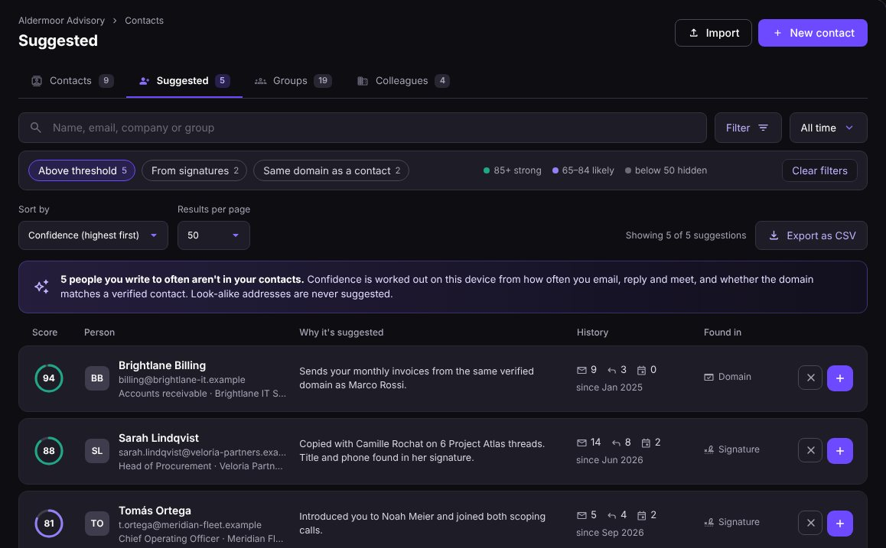
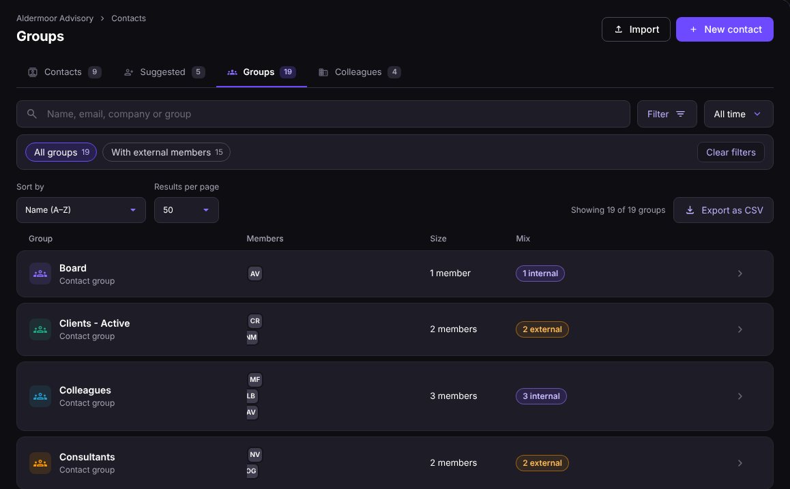
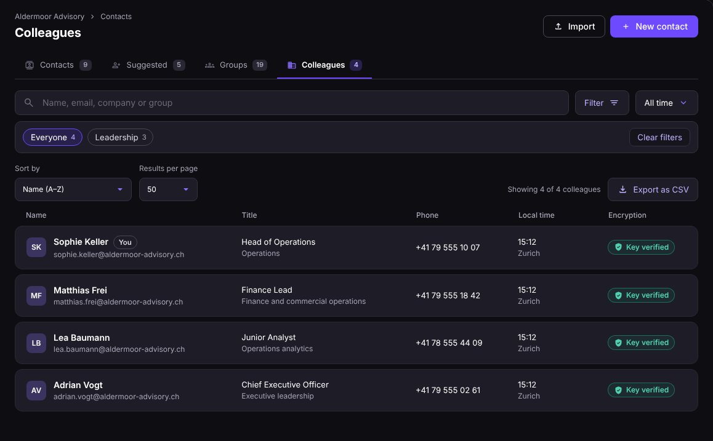
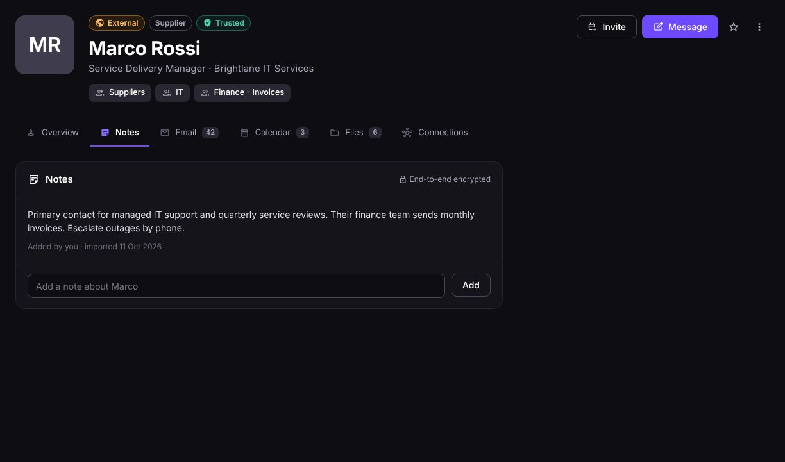
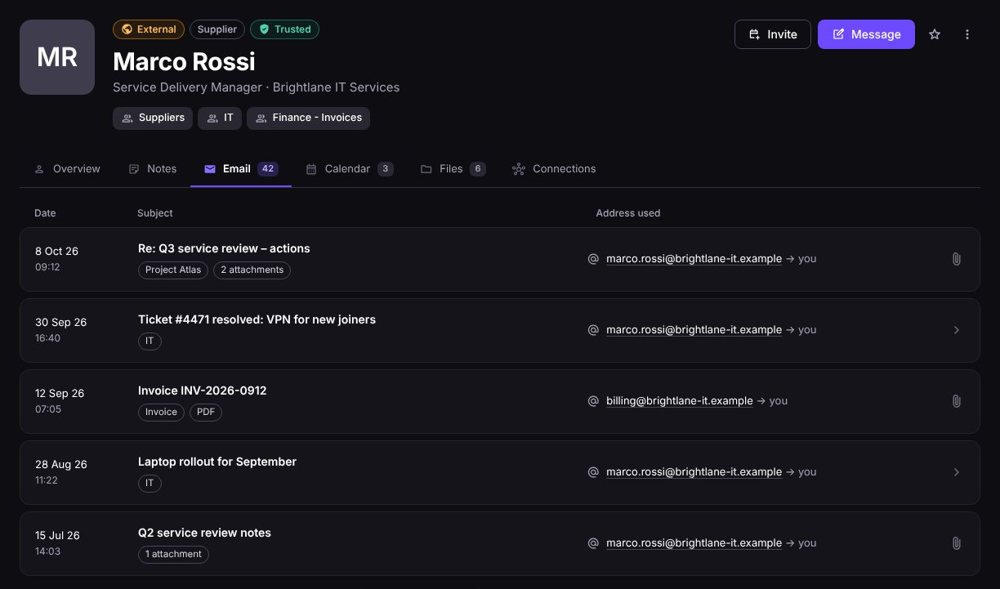
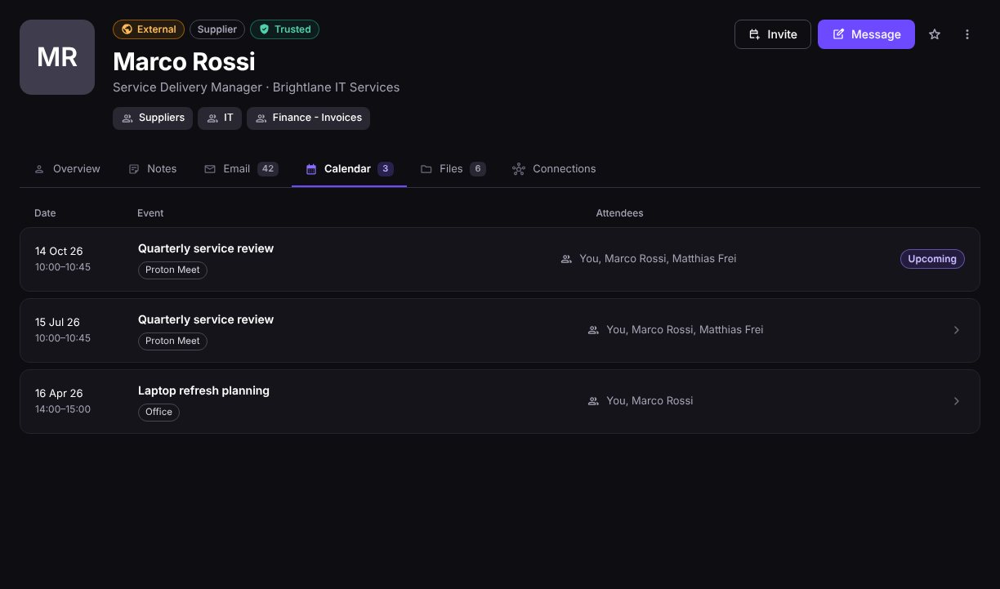
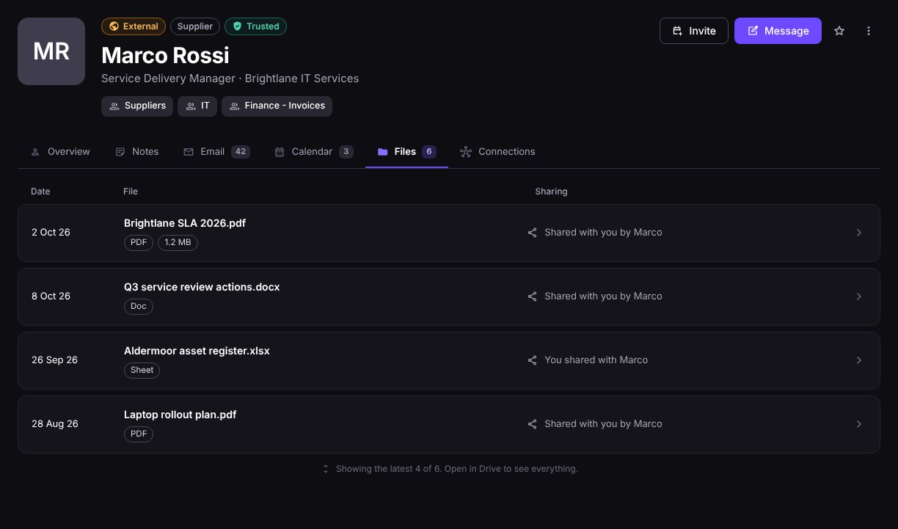
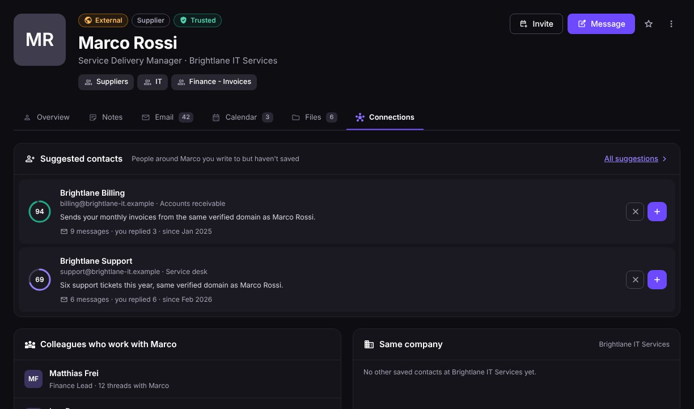

The contacts experience, mocked up
The two MVP features: Trusted Contacts, which gives every person context and trust signals, and Protection, which uses those contacts to stop the wrong person getting through, in either direction. Every screen is interactive and uses the same fictional company, Aldermoor Advisory.
Trusted Contacts
Contacts stop being a list of names. The contacts list shows everyone with their company, groups, last contact and trust status, and a hover card gives a quick summary without leaving the page. The contact view opens full screen instead of a small modal, with tabs for everything you share with that person across Mail, Calendar and Drive, and the trust signals behind it.
 Contacts
ContactsContacts overview
Everyone in one table, laid out like a security console: search, filter chips with counts, sort and export.
- Hover card: role, email, phone, local time, email/meeting/file counts and the last thread, with Message and Open.
- Trust column: Trusted for outside contacts, Key verified for colleagues.
- Click any row to open the full contact view.

SuggestedSuggested
People you write to often but haven't saved, ranked by a confidence ring from message, reply and meeting history. One click on + saves them. Look-alike addresses are never suggested.
Open tab
GroupsGroups
Every contact group with its members and how many are internal or external, so you can see at a glance which groups reach outside the company.
Open tab
ColleaguesColleagues
Everyone at your organisation, with title, phone, local time and a verified encryption key, so internal mail is end-to-end encrypted by default.
Open tab Overview
OverviewOverview
Details with encrypted fields marked, Email, Calendar and Files tiles, recent activity across apps and the trust signals checklist.
Open tab
NotesNotes
Private, end-to-end encrypted notes about the person: how they like to work, who approves what, how you met.
Open tab
EmailEvery thread with this person, across all of their addresses, showing which address each one came from.
Open tab
CalendarCalendar
Upcoming and past meetings together, with who else attended.
Open tab
FilesFiles
Files shared both ways in Drive and Docs, and who shared them.
Open tab
ConnectionsConnections
Suggested contacts around this person, colleagues who also work with them, and other people at the same company.
Open tabProtection
The same contact data protects in both directions. Incoming mail is checked against the people you already know, and outgoing mail is checked against who you usually send this kind of email to. Checks run on the device and use addresses and your own history, never message content.
 Inbound
InboundImpersonation attemptInbound
An email from "Marco Rossi" at brightIane-it.example asks to change bank details. The warning explains the look-alike domain, compares the sender with the real Marco and offers Report, Mark as safe or I'm not sure.
Open scenario Outbound
OutboundAccidental misdirectionOutbound
Autocomplete picked Camille Roche at Veloria Capital instead of Camille Rochat at Veloria Partners. Before sending, the composer shows both side by side and offers to switch.
Open scenario